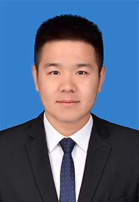

返回团队成员
教师及科研人员
李鑫琦
助理研究员
光学探针驱动的中药药效物质辨识新方法、药食同源物质活性成分的高通量遴选及感官风味化学、组学研究
现任职于江苏省中国科学院植物研究所（南京中山国家植物园）药用植物研究中心、江苏省植物资源保护与利用重点实验室、江苏省抗糖尿病药物筛选服务中心，任助理研究员。研究聚焦光学探针驱动的中药药效物质辨识新方法、药食同源物质活性成分的高通量遴选及感官风味化学、组学研究。
研究、任职与荣誉
- 现任江苏省中国科学院植物研究所（南京中山国家植物园）药用植物研究中心、江苏省植物资源保护与利用重点实验室、江苏省抗糖尿病药物筛选服务中心助理研究员
- 主持国家自然科学基金青年项目、江苏省中国科学院植物研究所博士人才科研启动基金项目
- 参与中国中医科学院中医药健康产业研究所2025年度创新联合项目
- 在 Food Chem、J Chromatogr A、Food Res Int、Front Pharmacol、J Pharm Biomed Anal、Anal Bioanal Chem 等国际期刊发表论文10余篇
- 获授权中国发明专利2件